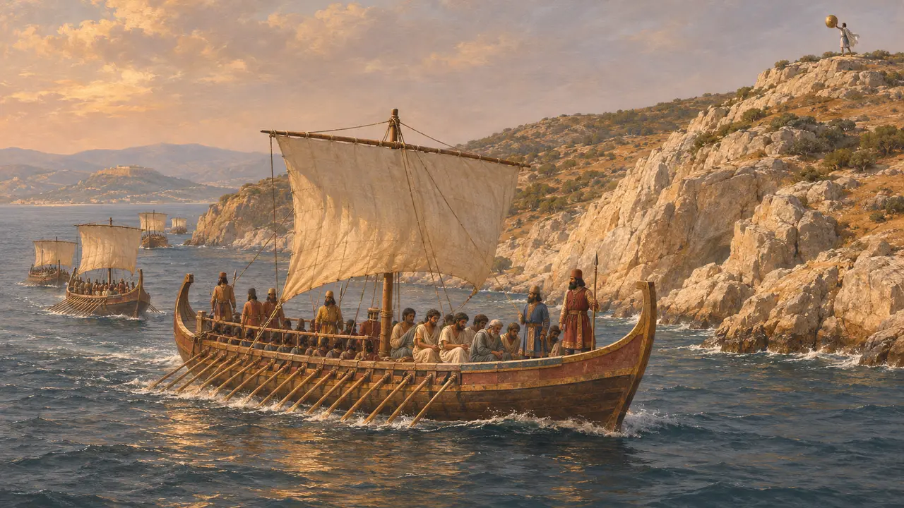
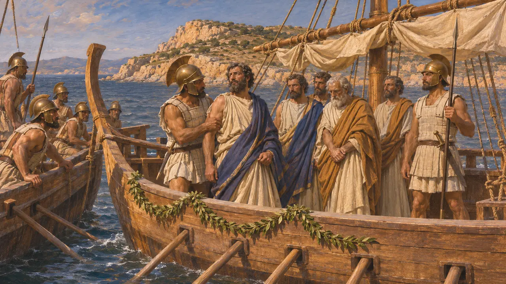
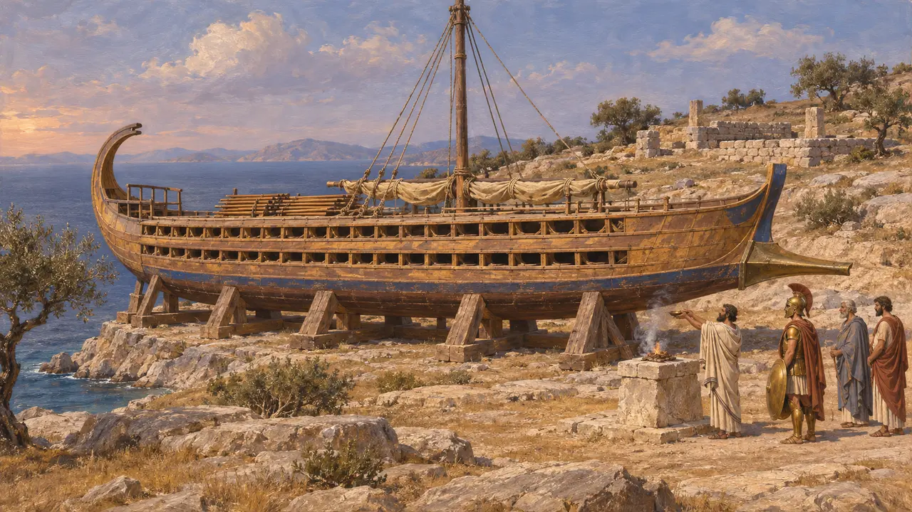
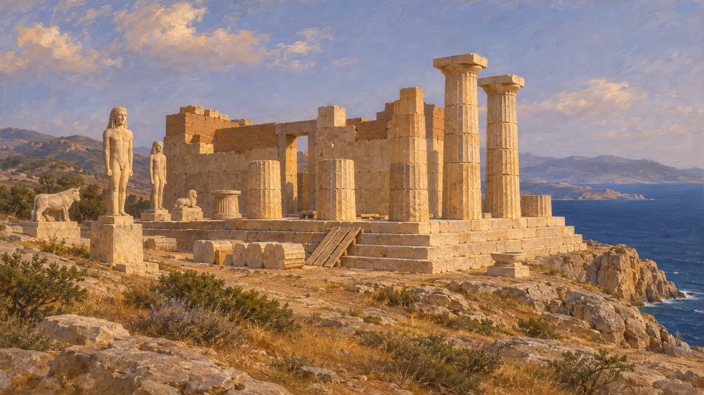

O cabo Súnio
O cabo sul da Ática, contornado pela frota persa depois de Maratona, 490 a.C.
No jogo: Nível 8: A Baía de Maratona
Súnio é o cabo na ponta sul da Ática, com um santuário de Posêidon em suas alturas. Depois da batalha de Maratona a frota persa o contornou para chegar a Atenas antes que o exército pudesse voltar. Em 480 AEC, depois de Salamina, os gregos dedicaram ali uma trirreme persa capturada.
No jogo: Súnio é o ponto de virada da corrida no mar na segunda frente da fase de Maratona, e é citado em seu cartão de vitória e nas conversas.

Contornando o Súnio
Relato antigoDepois da luta junto aos navios, diz Heródoto, os persas embarcaram os cativos erétrios e contornaram Súnio, esperando chegar a Atenas antes de seu exército. Das alturas mostraram-lhes um escudo, e os atenienses voltaram a tempo.
Herodotus 6.115-116


A trirreme de Salamina
Relato antigoDepois de Salamina, os gregos escolheram do butim três trirremes persas para dedicar aos deuses: uma no Istmo, uma em Súnio e uma a Ájax em Salamina. Heródoto diz que a do Istmo ainda estava lá em seu tempo.
Herodotus 8.121

O templo
Nos registrosO templo de mármore de Posêidon, cujas colunas se erguem hoje no cabo, foi construído por volta de 440 AEC. Sob ele estão os restos de um templo anterior, iniciado por volta de 500 AEC, que ficou inacabado ou foi destruído quando os persas chegaram em 480 AEC. Kouroi arcaicos foram achados no santuário.
Sunium excavations; National Archaeological Museum, Athens
Fontes
- Herodotus 6.87, 6.115-116, 8.121
- Excavations at Sunium